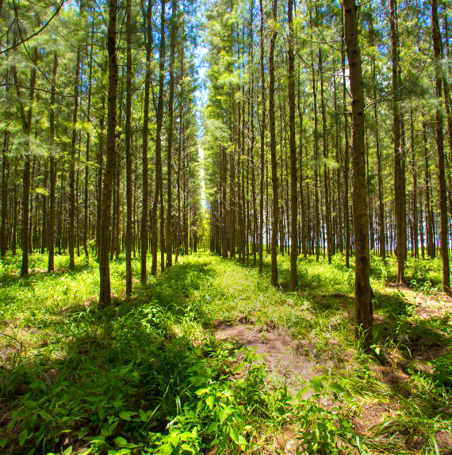

Crop Rotation and Diversity:
❮
❯
Plant different crops in the same area over time to improve soil health and control pests.
Cover Crops and Perennials:
❮
❯
Use plants like clover or rye to protect and nourish the soil when main crops aren’t growing.
Reduced Tillage:
❮
❯
Minimize plowing to prevent soil erosion and maintain soil health.
Integrated Pest Management (IPM):
❮
❯
Use natural methods and fewer chemicals to manage pests.
Combining Livestock and Crops:
❮
❯
Raise animals and grow crops together to recycle nutrients and improve farm efficiency.
Agroforestry:

❮
❯
Incorporate trees and shrubs into farming to provide benefits like shade, shelter, and extra income from fruits or nuts.
Whole System Management:
❮
❯
Treat all parts of the farm as interconnected, protecting areas like streams and field edges to reduce erosion and support wildlife.